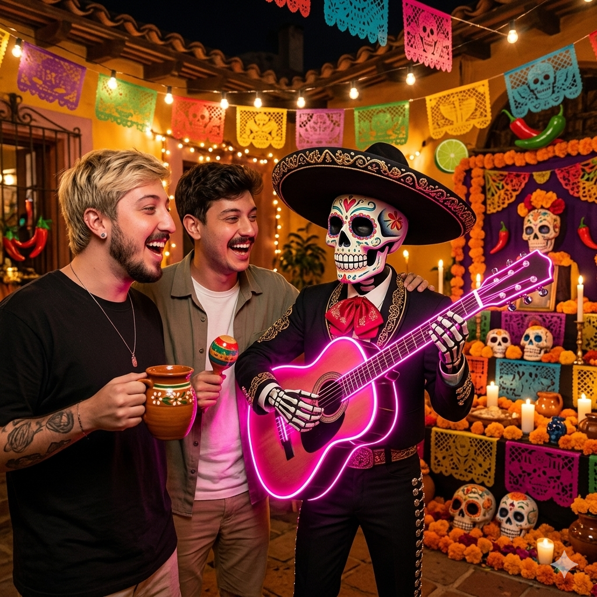
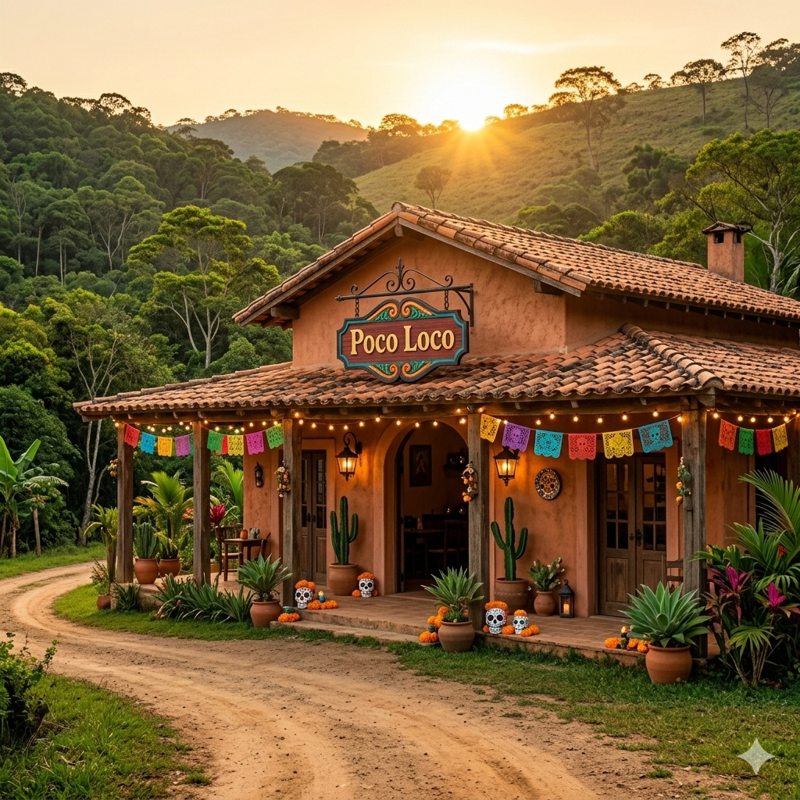
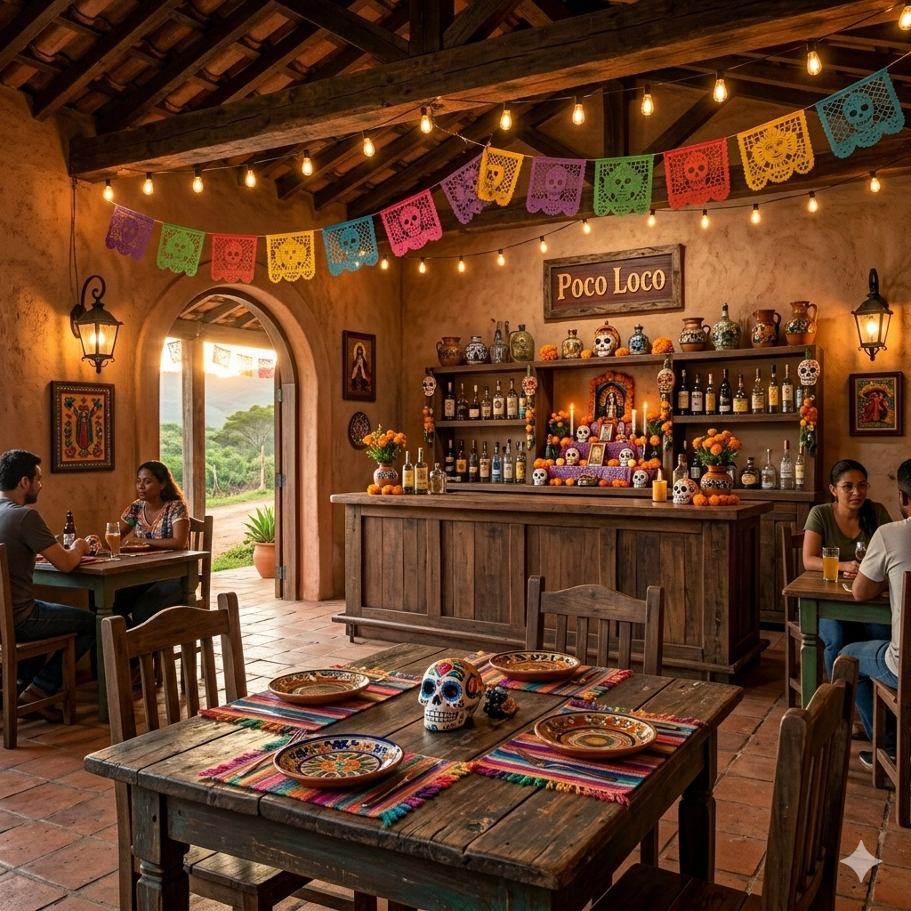
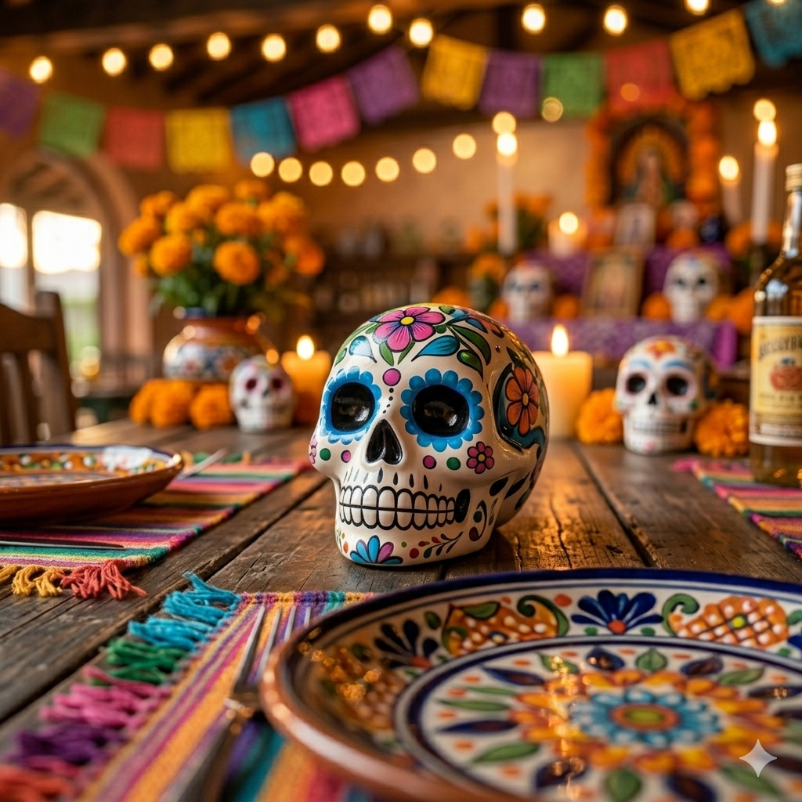

Nossas Raízes
Nós somos o Luan e o Guilherme, e sempre fomos completamente apaixonados pela explosão de sabores da verdadeira culinária mexicana. Mas foi quando viajamos para o México que tivemos uma experiência que mudou tudo. Foi de outro mundo!
No meio de uma festa tradicional, fomos arrebatados pela energia do lugar: o frescor do limão nas bebidas, o ardor perfeito das pimentas locais e a música de um mariachi inesquecível que animava a rua tocando um violão rosa neon
Voltamos de lá tão fascinados e "um pouco loucos" por aquela energia que precisávamos trazer isso para casa. Assim nasceu o Poco Loco. Nosso mascote na logo é a lembrança viva daquela viagem: a caveira mexicana celebrando a vida, com sua guitarra rosa, cercada por temperos intensos.
Nossa Casa
Um ambiente caliente, vibrante e perfeito para a sua fiesta.


